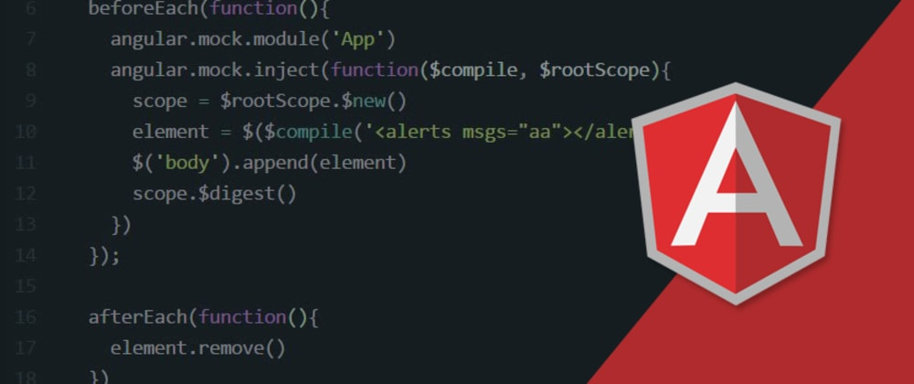

AngularJS — JavaScript-фреймворк с открытым исходным кодом. Предназначен для разработки одностраничных приложений.
Его цель — расширение браузерных приложений на основе MVC-шаблона, а также упрощение тестирования и разработки.
Фреймворк работает с HTML, содержащим дополнительные пользовательские атрибуты, которые описываются директивами, и
связывает ввод или вывод области страницы с моделью, представляющей собой обычные переменные JavaScript.
Значения этих переменных задаются вручную или извлекаются из статических или динамических JSON-данных.
